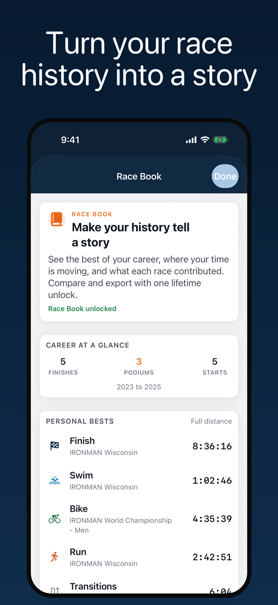
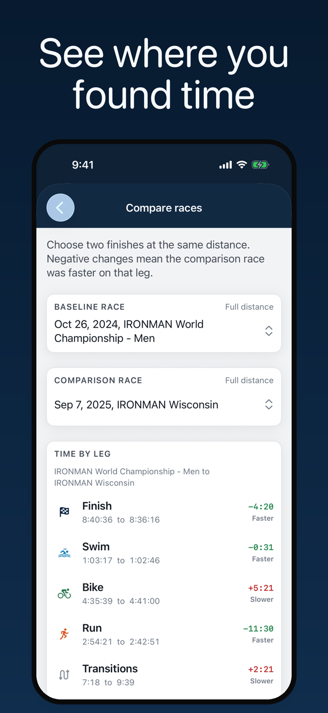
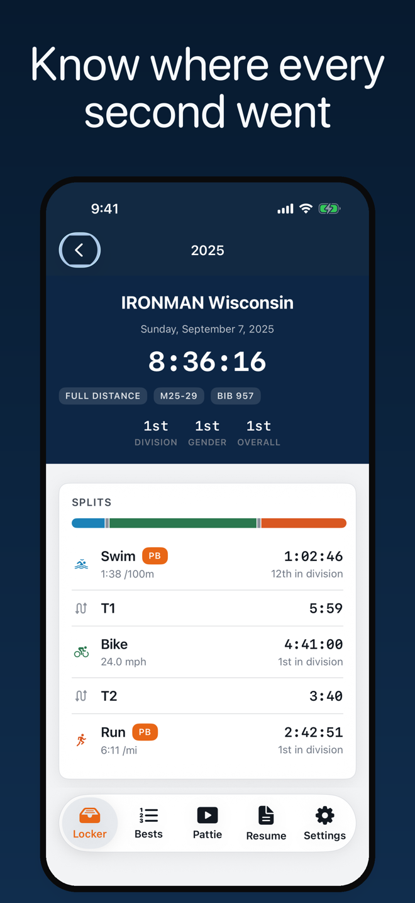
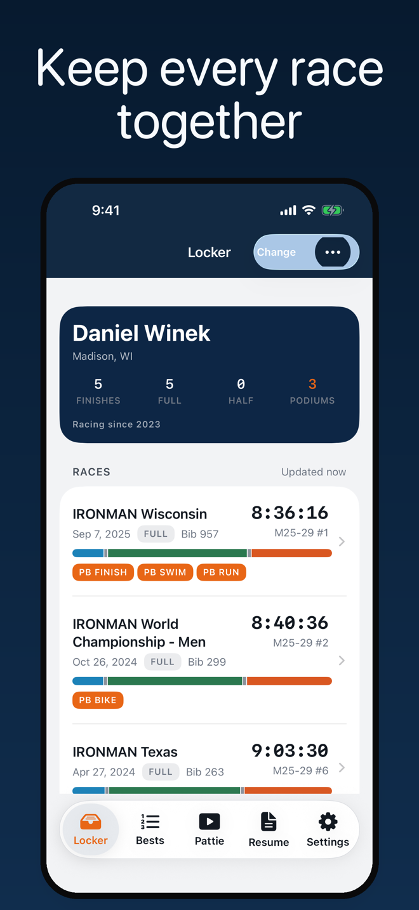

Compare every swim, bike, transition, and run, then get practical race pointers from Pattie's filmed advice.
iPhone · Triathlon splits · Pattie's pointers
Download on the App Store


Choose what you are training for, pick the moment that is bothering you, and hear a practical pointer from Pattie's filmed advice. It covers race morning, the swim start, transitions, fuel, weather, running, and what comes after the finish.

Find the split, learn from the day, and keep the pointers useful.
Type the name you registered with and choose the matching athlete. The published history fills in from there.
See dates, distances, bibs, official times, division places, and every published split without opening a new race page.
Find your fastest swim, bike, run, transition, or finish. Full-distance and half-distance races stay in their own lists.
Ask about nerves, the swim, transitions, fuel, weather, or the finish. Her answers come from filmed advice, not generated chat.
See overall and division places with the field size behind them, so a split rank has the context it needs.
Build a clean race resume with the starts, times, bibs, places, and splits you want to show.
Keep conditions, nutrition, gear, and what you learned attached to the result itself, on your device.
The complete feature set is currently available without a purchase. Iron Splits+ remains available for existing customers, with Restore Purchases built in.
Results are shown as published by each event's timing provider. The app does not verify or rewrite the official record.
No account, no ads, and no analytics SDK. Your claimed athlete, cached results, race notes, and settings stay on your iPhone. The app only requests published results when you search or refresh.
Privacy Policy →A simpler way to keep a long race history useful.
The official results page tells you what happened in one race. It does not tell you which of your starts had your fastest bike, how much time you lost in transition, or where a split landed in that field.
IM Iron Splits turns a career of published results into a locker you can search, compare, annotate, and share. Start with your name, then let the app do the sorting.
The complete feature set is currently available without a purchase or account. Iron Splits+ remains available for existing customers, and Restore Purchases stays visible so a purchase can be reattached on a new device.
| Platform | iOS 17+ |
| Framework | SwiftUI · Swift 6 · RevenueCat |
| Data | Published event timing results |
| Storage | Locker, notes, and settings on device |
| Account | None required |
| Affiliation | Independent app |
Split-first thinking. A best finish is useful. Knowing which race held your best bike is the reason to come back.
Distance stays honest. Full-distance, half-distance, and running results are ranked in their own groups rather than flattened into one misleading list.
Privacy as a feature. The app has no account system and no developer-owned database of your race history. Apple handles purchases, and RevenueCat receives only what is needed to unlock or restore them.
The official record stays official. The app makes published results easier to use, while the event timing provider remains the source of truth.
IM Iron Splits is an independent app. It is not affiliated with, endorsed by, or sponsored by any race organiser, series, or timing company. Race names appear only to identify the published results they belong to. Results can change or be incomplete, so check the official result when accuracy matters.
Free to download. No account required.
Download on the App Store